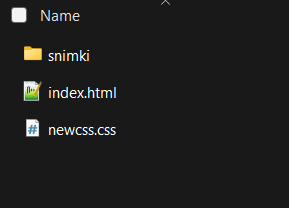
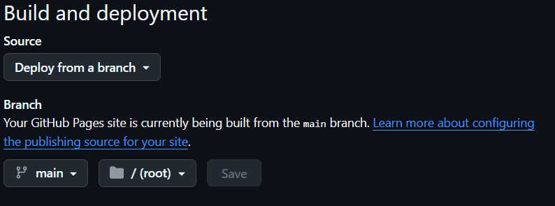
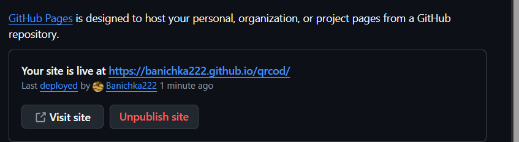
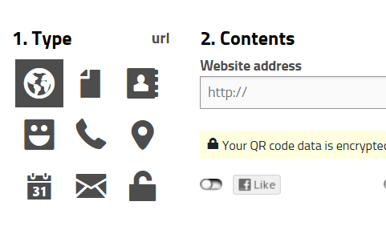

Ще използваме github за да хоствеаме саитът и след това ще направим линкът на QR код
- Create a GitHub repository
- направи github account
- настисни си на профила горе вдясно и от там на "Repositories"
- след това натисни зеления бутон "New"
- сложи му име и го направи на public, след което натисни "Create repository
- след това натисни синият надпис "uploading an existing file"
- Upload your files
- хвани и издърпаи избраните фаилове в полето на github като гледаш да се само тази които са в папката при .html фаилът

- след това натисни зеленият бутон "Commit changes"
- след това натисни на "Settings"
- Enable GitHub Pages
- от ляво на екрана в секцията "Code and automation" натисни на "Pages"
- от там под "Build and deployment" на "Source" трябва да е на "Deploy from a brach", и на "Branch" избери "main" и "/(root)" и натисни save

- презареждаи страницата докато не се покаже линкът към саитът

- Generate the QR code
- копираи линкът
- отвори https://goqr.me/ и селектираи url като type

- постави линкът в полето на "Website address"
промени по .html могат да се направят през github или да се reuploadне промененият фаил
саитът и qr кодът са активни постоянно но за да се отвори саитът се изисква интернет